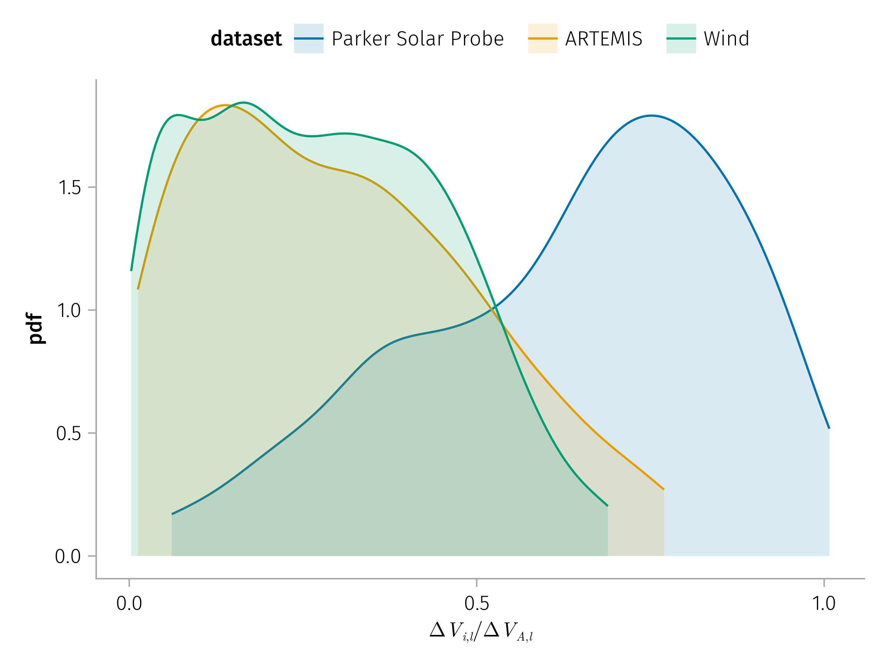
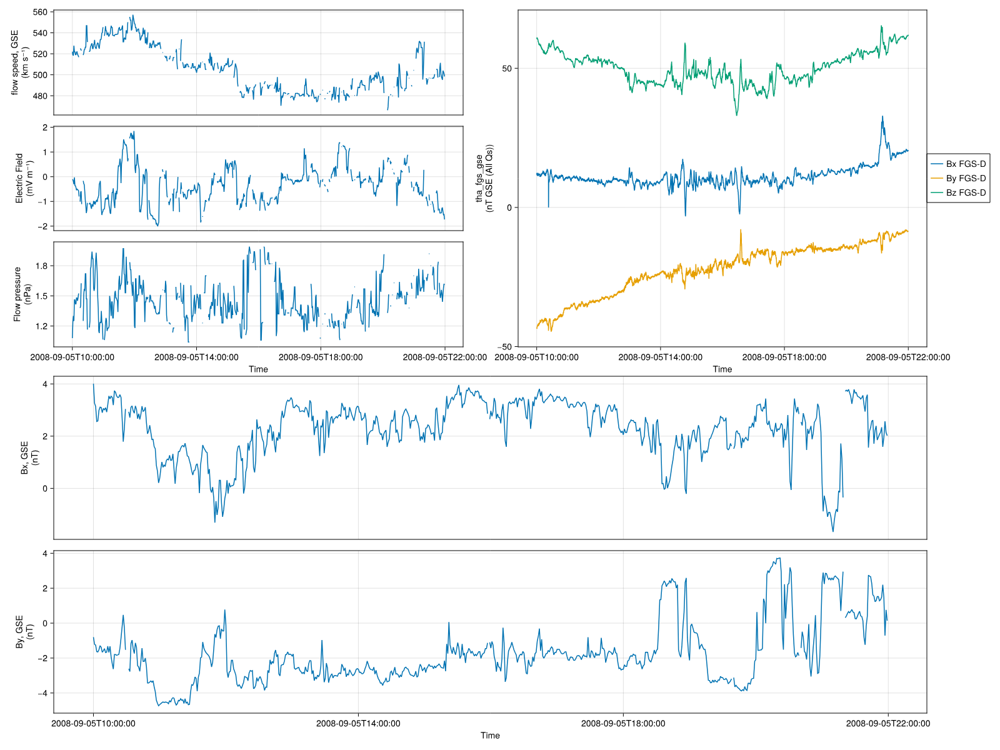

Thesis Prospectus
1 Motivation and Significance (Summary)
Solar energetic particles (SEPs), originating from solar flares and coronal mass ejections, pose significant risks to satellite operations, human spaceflight, and communication systems. Accurate prediction of SEP events and their propagation through the heliosphere requires a detailed understanding of particle transport mechanisms in turbulent solar wind environments.
Traditionally, theoretical studies and numerical models of particle transport in the solar wind have focused on turbulence characterized by broadband, low-amplitude, random-phase magnetic fluctuations described by power-law spectra (Jokipii 1966, 1967). However, observations consistently reveal the abundance of intermittent, meso-scale, coherent structures within this turbulent medium, notably current sheets—thin plasma boundaries marked by abrupt magnetic field changes. These current sheets deviate significantly from classical magnetohydrodynamic (MHD) picture due to their kinetic-scale features and strong local magnetic gradients.
Recent theoretical and numerical studies suggest that these coherent structures play a critical role in particle scattering, potentially surpassing the scattering efficiencies predicted by traditional quasilinear theories (Malara, Perri, and Zimbardo 2021; Artemyev et al. 2020). Current sheets, generated naturally through nonlinear turbulence cascades, provide localized regions of intense electromagnetic interactions, leading to enhanced scattering and modification of the particle’s spatial distribution. Despite their demonstrated importance, a quantitative and systematic understanding of how these structures influence SEP transport remains incomplete.
Addressing this critical gap, this dissertation aims to rigorously investigate and quantify the impact of solar wind current sheets on SEP transport processes. Specifically, this research seeks to:
- Characterize the properties and occurrence of current sheets throughout different regions of the heliosphere.
- Develop and validate theoretical models that describe particle scattering induced by these coherent structures.
- Provide a more comprehensive understanding of SEP dynamics, thereby improving predictive capabilities and contributing significantly to space weather modeling.
The motivation for this research lies in the critical need for improved SEP transport models that accurately reflect real-world solar wind conditions. By integrating observational data and advanced theoretical frameworks, this dissertation will provide novel insights into heliospheric particle dynamics, ultimately enhancing our ability to predict and mitigate the risks associated with SEP events.
2 Research Context and Background
The study of solar energetic particles (Klein and Dalla 2017; Desai and Giacalone 2016; Reames 2013), turbulent magnetic fields (Schekochihin 2022; Matthaeus 2021; Oughton and Engelbrecht 2021; Bruno and Carbone 2016, 2013; Verscharen, Klein, and Maruca 2019; Tu and Marsch 1995), and charged particle transport (Engelbrecht et al. 2022; van den Berg, Strauss, and Effenberger 2020) has produced a vast body of literature spanning decades of theoretical, observational, and numerical research. Within this context, current sheets have increasingly been recognized as key structures. In the following sections, we highlight a selection of foundational observations, models, and theoretical developments that are directly or indirectly connected to the role of current sheets. These include both classical frameworks and recent advances that point to the importance of coherent structures in turbulent plasmas. In Section 2.4, we summarize how a deeper understanding of current sheets can enhance our ability to model energetic particle transport and, more broadly, improve our understanding of heliospheric particle dynamics.
2.1 Solar Energetic Particles
Solar energetic particles (SEPs) are high-energy ions and electrons originating at or near the Sun. They span a broad energy spectrum, from Solar energetic particles (SEPs) consist of high-energy ions and electrons originating at or near the Sun. Unlike the solar wind and galactic cosmic rays (GCRs), solar energetic particles (SEPs) manifest as discrete episodic events with intensities that can vary dramatically—by several orders of magnitude—in just minutes. Additionally, SEP events exhibit significant variations in heavy ion composition, spectral shape, and spatial distribution.
SEPs are primarily accelerated through two distinct mechanisms: (1) magnetic reconnection-driven processes during solar flares, producing impulsive SEP events, and (2) shock-wave acceleration associated with fast coronal mass ejections (CMEs), resulting in large gradual SEP events.
Impulsive SEP events typically have short durations, lasting from minutes to a few hours, and feature characteristically high electron-to-proton ratios and enrichments of heavy ions. In contrast, gradual SEP events are longer-lasting (several days) and are predominantly proton-rich, often associated with fast CMEs driving shocks in the solar corona and interplanetary space. These shocks accelerate particles over extended regions, producing widespread and intense radiation storms.

2.2 Turbulent Magnetic Fluctuations
Solar wind turbulence spans scales from the large‑scale coherence length (∼0.01 AU) down to kinetic dissipation scales on the order of the thermal ion gyro‑radius (∼100 km). Of particular importance for energetic particle transport is the turbulence at intermediate scales, often referred to as inertial-range turbulence whose corresponding energy range is about \(1\) GeV to \(1\) keV assuming a \(5\) nT magnetic field. This covers nearly all SEPs as the gyro-radii of almost all SEPs are smaller than the coherence scale and larger than the dissipation scale.
The transport of SEPs through the heliosphere is fundamentally shaped by the properties of magnetic turbulence. Key parameters—such as the spatial inhomogeneity, turbulence level (\(δB/B₀\)), spectral index, and anisotropy of wave vectors (Pucci et al. 2016) —strongly influence how particles scatter in velocity space. These properties govern both parallel and perpendicular transport through mechanisms including pitch-angle diffusion, magnetic field-line meandering, and gradient or curvature drift.
Classical scattering theories and numerical models of particle transport (Giacalone and Jokipii 1999) typically model turbulence as a sea of random, phase-uncorrelated fluctuations (common constructions of magnetic fluctuations for the slab component \(Œ¥ùêÅ^s\) and two-dimensional component \(Œ¥ùêÅ^{2D}\) are shown below in Equation 1). However, this idealized view neglects the intricate internal nonlinear structures of turbulence. Increasingly, observations and simulations show that solar wind turbulence is highly intermittent and populated with coherent structures‚Äîespecially current sheets‚Äîthat arise naturally through nonlinear cascade processes. These localized structures, often characterized by sharp magnetic field gradients, can trigger rapid and large pitch-angle deflections in energetic particles, significantly enhancing scattering beyond quasilinear predictions.
\[ \begin{aligned} & Œ¥ùêÅ^s=\sum_{n=1}^{N_m} A_n\left[\cos \alpha_n\left(\cos \phi_n \hat{x}+\sin \phi_n \hat{y}\right)+i \sin \alpha_n(-\right.\left.\left.\sin \phi_n \hat{x}+\cos \phi_n \hat{y}\right)\right] \\ & \times \exp \left(i k_n z+i \beta_n\right) \\ & Œ¥ùêÅ^{2 D}=\sum_{n=1}^{N_m} A_n i\left(-\sin \phi_n \hat{x}+\cos \phi_n \hat{y}\right) \\ & \times \exp \left[i k_n\left(\cos \phi_n x+\sin \phi_n y\right)+i \beta_n\right] \end{aligned} \tag{1}\]
Therefore, understanding SEP transport requires more than bulk statistical descriptions of turbulence; it demands detailed knowledge of its intermittent nature and the embedded coherent structures that mediate particle scattering. Accurately characterizing these features is essential for developing realistic models of SEP propagation throughout the heliosphere.
2.3 Charged Particle Transport and Turbulence Transport Models
The large-scale behavior of energetic charged particles in the heliosphere is commonly described using a diffusive approximation, justified when the particle scattering time is short compared to the timescale of interest. Under this assumption, the evolution of an approximately isotropic particle distribution is governed by the Parker transport equation (Parker 1965). This foundational framework captures four main transport processes: spatial diffusion due to particle scattering, advection with the solar wind, drifts (such as gradient and curvature drifts due to variations in the large-scale magnetic field), and adiabatic energy change:
\[ \frac{∂ f}{∂ t}=\frac{∂}{∂ x_i}\left[κ_{i j} \frac{∂ f}{∂ x_j}\right]-U_i \frac{∂ f}{∂ x_i}-V_{d, i} \frac{∂ f}{∂ x_i}+\frac{1}{3} \frac{∂ U_i}{∂ x_i}\left[\frac{∂ f}{∂ \ln p}\right]+ \text{Sources} - \text{Losses}, \tag{2}\]
where \(f\) is the phase-space distribution as a function of the particle momentum, \(p\), position, \(x_i\), and time, \(t\); \(κ_{i j}\) is the symmetric part of the diffusion tensor; \(U_i\) is the bulk plasma velocity; \(V_{d, i}\) is the drift velocity. The drift velocity can be formally derived from the guiding center approximation averaged over a nearly isotropic distribution, and can be included as the antisymmetric part of the diffusion tensor.
The symmetric diffusion tensor can be decomposed into components parallel and perpendicular to the mean magnetic field using: \(κ_{ij}=κ_{\perp} \delta_{ij}-\frac{\left(κ_{\perp}-κ_{\|}\right) B_i B_j}{B^2}\). The parallel diffusion coefficient, \(κ_{\|}\), is related to the pitch-angle diffusion coefficient \(D_{\mu\mu}\) through the quasilinear theory (QLT) framework (Jokipii 1966, 1968) as \(κ_{\|}=\frac{v^2}{8} \int_{-1}^1 \frac{\left(1-\mu^2\right)^2}{D_{\mu \mu}(\mu)} d \mu\). While parallel transport is relatively well understood, perpendicular (cross-field) diffusion (\(κ_\perp\)) remains more elusive due to its nonlinear and non-resonant nature (Shalchi 2021; Costa Jr. et al. 2013). A key factor influencing cross-field transport is the dimensionality of the turbulence (Giacalone and Jokipii 1994): in models with at least one ignorable spatial coordinate (e.g., slab geometry), cross-field diffusion is artificially suppressed, failing to capture essential physics. In general, cross-field transport arises from two distinct mechanisms: (1) particle motion along stochastic, meandering magnetic field lines, which can lead to substantial displacements relative to the mean field direction; and (2) the true decorrelation of particles from their initial field lines, allowing them to effectively jump between neighboring lines. Though often considered a small fraction of \(κ_\parallel\) (Giacalone and Jokipii 1999), recent simulations reveal that \(κ_\perp\) can be significant and strongly dependent on particle energy and turbulence structure (Dundovic et al. 2020).
Anisotropy in particle distributions is common in SEP events, particularly in the early phases or near upstream regions of interplanetary shocks. One fundamental source of anisotropy is adiabatic focusing in a diverging magnetic field. To account for such effects, the focused transport equation (Roelof 1969; Earl 1976) extends the Parker equation by explicitly retaining the pitch-angle dependence:
\[ \frac{∂ f}{∂ t}+\mu v \frac{∂ f}{∂ z}+\frac{v}{2 L}\left(1-\mu^2\right) \frac{∂ f}{∂ \mu}=\frac{∂}{∂ \mu}\left(D_{\mu \mu} \frac{∂ f}{∂ \mu}\right) \]
where \(f= f(z,\mu,t)\) is the phase-space distribution, \(\mu\) is the pitch-angle cosine and \(L = -B \left(\frac{dB}{dz}\right)^{-1}\) is the focusing length.
Beyond classical diffusion, observations in SEP events and near interplanetary shocks often reveal anomalous transport behavior (G. Zimbardo, Pommois, and Veltri 2006), characterized by subdiffusive or superdiffusive scaling of particle displacement (G. Zimbardo et al. 2015). These deviations from Gaussian diffusion are attributed to the intermittent and structured nature of solar wind turbulence, and are better described using generalized frameworks such as fractional diffusion models (del-Castillo-Negrete, Carreras, and Lynch 2005) or Lévy statistics (Zaburdaev, Denisov, and Klafter 2015).
2.4 Current sheet’s role in particle transport
Across all major transport models, current sheets emerge as a critical feature influencing energetic particle dynamics. In the Parker equation framework, current sheets modify the pitch-angle scattering rate and hence directly affect \(\kappa_\parallel\). In the context of the focused transport equation, they introduce strong pitch-angle dependencies and rapid scattering events. Moreover, current sheets can induce memory effects that violate the Markov assumption (Gaetano Zimbardo and Perri 2020) of classical diffusion models and contribute to anomalous diffusion regimes.
These structures also challenge the conventional picture of diffusion. For parallel transport, the intense magnetic shear and sharp field gradients in current sheets can induce nonlinear effects, producing pitch-angle jumps that are too large to be treated as diffusive. For perpendicular transport, it is often assumed that field-line random walk dominates cross-field motion, as the magnetic field is typically smooth on scales comparable to SEP gyro-radii. However, near current sheets, the magnetic field becomes highly inhomogeneous—often varying on scales similar to or smaller than the gyro-radius—thus enabling enhanced particle transfer between field lines and more significant perpendicular diffusion.
Because of their coherent, localized nature and their ability to shape both pitch-angle and spatial scattering processes, current sheets play a central role in accurately modeling particle transport in the turbulent heliospheric environment.
3 Objectives and Thesis Plan
The overall goal of this thesis is to quantify and model the impact of solar wind current sheets on energetic particle transport. This research is structured around two primary objectives:
Observational characterization of solar wind current sheets across the heliosphere
Development of data-driven theoretical models for current sheet-induced particle scattering and transport
4 Work Completed
4.1 Observational Analysis of Current Sheets
Context: A critical first step in understanding the role of current sheets in energetic particle transport is to characterize their statistical properties and quantify the parameters most relevant to particle scattering. Although current sheets have been extensively observed—especially near \(1\) AU—our knowledge of how their properties evolve across heliocentric distances, and how key scattering-related parameters vary with radial distance, has remained incomplete. Previous studies often lacked simultaneous, multi-point measurements and did not adequately separate temporal variability from spatial trends, leading to persistent uncertainties regarding the role in particle transport, their origin, evolution within the turbulent solar wind.
Approach: To bridge this observational gap, we conducted a detailed statistical analysis using continuous solar wind data from multiple spacecraft: Parker Solar Probe (PSP) at distances down to 0.1 AU, Wind, ARTEMIS, and STEREO at 1 AU, and Juno during its cruise phase out to 5 AU near Jupiter. This combination allowed us to track the evolution of current sheet properties across a wide radial distance, from near Alfvénic critical surface to the outer inner heliosphere.

Results: Our analysis reveals that solar wind discontinuities maintain kinetic-scale thicknesses throughout the inner heliosphere, with occurrence rates decreasing approximately as \(1/r\) with radial distance between 1 and 5 AU. When normalized to the local ion inertial length and Alfvén current, both the current density and thickness of these structures remain nearly constant over the range from 0.1 to 5 AU (see Figure 1). This suggests that current sheets consistently influence energetic particle transport across heliocentric distances, with their higher occurrence rates closer to the Sun indicating a more pronounced role in shaping particle dynamics in the inner heliosphere. Furthermore, by leveraging simultaneous observations from spacecraft at different radial distances, we demonstrate that the observed radial trends reflect genuine spatial evolution rather than temporal or solar-cycle effects. In particular, we propose a new interpretation of the reduced occurrence rate of current sheets at larger distances as being partly due to a geometric effect—namely, the decreasing likelihood of spacecraft intersecting inclined structures at greater heliocentric distances.
Together, these results provide critical empirical constraints for particle transport modeling and establish a robust observational foundation for the theoretical and numerical components of this thesis.

4.2 Quantitative Modeling of Particle Scattering
Context: While it is well established that turbulence governs energetic particle transport in the heliosphere, the specific role of coherent structures—particularly current sheets—in shaping scattering processes remained poorly quantified. A central objective of this thesis was to develop a physics-based, observation-informed model that directly links solar wind current sheet properties to pitch-angle scattering rates of energetic particles.
Approach: To this end, we combined statistical measurements of current sheets at 1 AU with a Hamiltonian analytical framework and test particle simulations to investigate how particle scattering efficiency varies with current sheet geometry and particle energy, using a realistic magnetic field configuration:
\[ \mathbf{B} = B_0 (\cos θ \ \mathbf{e_z} + \sin θ ( \sin φ(z) \ \mathbf{e_x} + \cos φ (z) \ \mathbf{e_y})) \]
where \(B_0\) is the magnitude of the magnetic field, \(θ\) is the azimuthal angle between the normal and the magnetic field, and \(φ(z)\) is the rotation profile of the magnetic field as a function of \(z\).
Results: Using a newly formulated Hamiltonian framework (see dimensionless form in Equation Equation 3) that incorporates the effects of magnetic field shear angle \(\beta\) and particle energy \(H\), we demonstrate that scattering rates depend strongly on the current density—which is directly tied to \(\beta\)—as well as on the ratio of the particle gyroradius to the current sheet thickness (see Figure 3). Notably, our results show that current sheets can induce rapid, non-diffusive pitch-angle jumps, particularly for SEPs in the 100 keV to 1 MeV energy ranges (see Figure 4). This behavior deviates significantly from classical quasilinear predictions and highlights the need to account for coherent structures in transport models. To describe long-term pitch-angle evolution, we developed a simplified probabilistic model of pitch-angle scattering due to current sheets and derived an effective pitch-angle diffusion coefficient \(D_{\mu\mu}\) (see Figure 5).
These findings enables direct comparison with other scattering mechanisms, facilitates the incorporation of SWD-induced scattering into global SEP transport models, and directly support the broader goal of this thesis: to improve our understanding of how energetic particles interact with turbulence in the solar wind.
\[ \begin{aligned} \tilde{H} &= \frac{1}{2} \left(\left(\tilde{p_x}-f_1(z)\right)^2+\left(\tilde{x} \cot θ + f_2(z)\right)^2+\tilde{p_z}^2\right) \\ f_1(z) &=\frac{1}{2} \cos β \ \left(\text{Ci}\left(βs_+(z) \right)-\text{Ci}\left(βs_-(z)\right)\right) + \frac{1}{2} \sin β \ \left(\text{Si}\left(βs_+(z) \right)-\text{Si}\left(βs_-(z)\right)\right), \\ f_2(z) &=\frac{1}{2} \sin β \ \left(\text{Ci}\left(β s_+(z) \right)+\text{Ci}\left(β s_-(z)\right)\right) -\frac{1}{2} \cos β \ \left(\text{Si}\left(β s_+(z) \right)+\text{Si}\left(β s_-(z)\right)\right) \end{aligned} \tag{3}\]


4.3 Multifuid Model for Current Sheet Alfvénicity
Context: Early in this thesis, we identified a consistent radial trend in the Alfvénicity of solar wind current sheets—defined as the ratio of the plasma velocity jump to the Alfvén speed jump. While current sheets near the Sun exhibit high Alfvénicity, this value systematically decreases with increasing heliocentric distance. This raised a fundamental question: why do current sheets appear increasingly non-Alfvénic with distance, despite their force-free magnetic structure? Understanding the internal structure, stability, and evolution of current sheets is crucial, as it directly relates to their role in modulating the transport of energetic particles across the heliosphere.

Approach: While classical single-fluid MHD models, even when extended to include pressure anisotropy, provide useful insights, they fall short of capturing the full physical complexity observed in current sheets. A natural and necessary extension is to adopt a multifluid framework, which allows for a more realistic treatment of multiple ion populations.
Results: To address this challenge, we developed a multifluid theoretical model that includes both a nonzero normal magnetic field and a guide field, and explicitly accounts for the dynamics of counter-streaming ion populations (see Figure 6). The model reveals a clear physical interpretation: close to the Sun, current sheets are dominated by a single ion population, leading to high Alfvénicity, while at larger radial distances, the ion populations become more balanced, resulting in reduced Alfvénicity (see Figure 7). By bridging the gap between overly simplified single-fluid models and fully kinetic treatments, this multifluid model offers a physically consistent and computationally tractable framework. It establishes a critical connection between the macroscopic evolution of current sheets and the microscopic processes relevant to energetic particle scattering—thus advancing the broader thesis goal of modeling SEP transport in a realistic, structure-rich solar wind.


4.4 Software Development
Context: A central requirement for this thesis was the ability to perform high-performance, interactive, and reproducible analysis of space plasma data and particle dynamics. While the established SPEDAS framework—originally developed in IDL and later ported to Python—remains widely used in the community, its design limitations hinder modern scientific workflows.
Approach: To address this, we developed a suite of Julia-based software tools that combine the flexibility and speed of a modern language with the functionality of legacy systems.
Results: The core of this framework is SPEDAS.jl, which has interfaces directly with pyspedas, speasy, and HAPI while introducing new routines with significantly improved performance. To enable efficient test-particle tracing in both analytic and numerical electromagnetic fields, we developed TestParticle.jl, a lightweight tool for rapid particle trajectory simulations. Additionally, we created SpaceDataModel.jl to implement flexible, standards-compliant data structures aligned with SPASE and HAPI specifications, and contributed physics utilities through ChargedParticles.jl and PlasmaFormulary.jl. These tools have been integral to the data analysis, modeling, and simulation components of this thesis, enabling scalable and transparent research workflows essential for studying particle transport in the heliosphere.
f = Figure()
tvars1 = ["cda/OMNI_HRO_1MIN/flow_speed", "cda/OMNI_HRO_1MIN/E", "cda/OMNI_HRO_1MIN/Pressure"]
tvars2 = ["cda/THA_L2_FGM/tha_fgs_gse"]
tvars3 = ["cda/OMNI_HRO_1MIN/BX_GSE", "cda/OMNI_HRO_1MIN/BY_GSE"]
t0,t1 = "2008-09-05T10:00:00", "2008-09-05T22:00:00"
tplot(f[1, 1], tvars1, t0, t1)
tplot(f[1, 2], tvars2, t0, t1)
tplot(f[2, 1:2], tvars3, t0, t1)
f
5 Proposed Research Direction
5.1 Spatial Diffusion Model Refinement
Building on previous results, the next phase of research will extend the pitch-angle scattering framework to comprehensively model spatial diffusion processes (both parallel and perpendicular). This extension is crucial for accurately capturing the full scope of SEP transport influenced by current sheets.
5.2 Methodology
Analysis: To estimate the spatial diffusion coefficients parallel and perpendicular to the mean magnetic field, we must quantify the net displacement a particle experiences due to interactions with consecutive current sheets. This includes estimating the parallel and perpendicular displacements, \(\Delta s_\parallel\) and \(\Delta s_\perp\), over the duration of one interaction cycle.
The total time between two consecutive current sheet encounters is modeled as the sum of the time spent inside the current sheet \(T_{cs}\), and the time spent free-streaming between sheets \(T_{fs}\), given by:
\[ T = T_{cs} + T_{fs}, \quad T_{fs} = \frac{s_{fs}}{|v_{\parallel,1}|} \]
where \(v_{\parallel,{0,1}}\) are the particle’s changed parallel velocity before and after interacting with the current sheet.
In the absence of scattering, the particle would follow the field line and travel a distance:
\[ s_0 = v_{\parallel,0} \cdot T = v_{\parallel,0} \left( T_{cs} + \frac{s_{fs}}{|v_{\parallel,1}|} \right). \]
However, when scattering occurs, the total distance traveled becomes:
\[ s = s_{cs}^* + \text{sign}\left(\frac{v_{\parallel,1}}{v_{\parallel,0}}\right) s_{fs} \]
where \(s_{cs}^*\) is the effective parallel distance the particle travels within the current sheet. The net displacement compared to the unperturbed case is then:
\[ \Delta s_\parallel = s - s_0 = (s_{cs}^* - v_{\parallel,0} T_{cs}) + s_{fs} \left(1 - \frac{v_{\parallel,0}}{v_{\parallel,1}} \right). \]
Under the approximation that \(s_{cs}^* << s_{fs}\), we obtain:
\[ \Delta s_\parallel \approx s_{fs} \left(1 - \frac{v_{\parallel,0}}{v_{\parallel,1}} - \frac{v_{\parallel,0} T_{cs}}{s_{fs}} \right). \]
The parallel spatial diffusion coefficient is then expressed as:
\[ \kappa_\parallel = \frac{(\Delta s_\parallel)^2}{\Delta t} = \frac{\left[s_{fs} \left(1 - \frac{v_{\parallel,0}}{v_{\parallel,1}} - \frac{v_{\parallel,0} T_{cs}}{s_{fs}} \right) \right]^2}{T_{cs} + \frac{s_{fs}}{v_{\parallel,1}}}. \]
Similarly, for the perpendicular direction:
\[ \kappa_\perp = \frac{(\Delta s_\perp)^2}{T_{cs} + \frac{s_{fs}}{v_{\parallel,1}}}. \]
The key parameters—\(v_{\parallel,1}\), \(T_{cs}\), \(\Delta s_\perp\), and \(\Delta t\)—are directly extracted from test-particle simulations, while quantities such as the current sheet separation distance \(s_{fs}\), thickness, shear angle, and normal orientation are treated as system parameters derived from solar wind observations. Together, these inputs enable a systematic and physically grounded estimation of spatial diffusion coefficients under realistic heliospheric conditions.

Data-Integrated Analytical Modeling: To ensure consistency with heliospheric observations, these results will be calibrated using multi-spacecraft datasets spanning radial distances from 0.1 to 5 AU. The derived diffusion coefficients will then be incorporated into turbulence-based transport models, providing a current-sheet-informed extension to global energetic particle transport frameworks.
5.3 Timeline
Months 1–4:
Refine the pitch-angle scattering model to incorporate both parallel and perpendicular spatial diffusion effects.
Conduct detailed test-particle simulations using solar wind parameters derived from multi-spacecraft observations (PSP, Wind, Juno, etc.).
Months 5–7:
Identify observational signatures supporting the proposed scattering model.
Examine how current sheet properties influence SEP scattering across different heliocentric distances.
Months 8–10:
Finalize the spatial diffusion model and assess its implications for large-scale SEP propagation.
Synthesize simulation results and observational insights into dissertation chapters. Integrate observational and theoretical findings into comprehensive thesis documentation.
5.4 Relevance and Broader Implications
This thesis substantially advances our understanding of particle transport mechanisms within turbulent space plasmas, offering significant enhancements to SEP prediction models. By accurately quantifying the influence of coherent structures such as current sheets, the research outcomes have direct applications to improving space weather forecasting, enhancing spacecraft operational safety, and contributing to the broader understanding of energetic particles transport and acceleration in the solar wind.
5.5 Opportunities for Future Research
Completion of this thesis opens several avenues for future investigations:
Exploration of current sheet interactions in other astrophysical environments, such as planetary magnetospheres.
Advanced integration of mapping techniques with numerical simulations to further refine SEP transport models.
Expanded observational campaigns utilizing upcoming spacecraft missions designed to probe heliospheric turbulence and particle dynamics at unprecedented resolution.